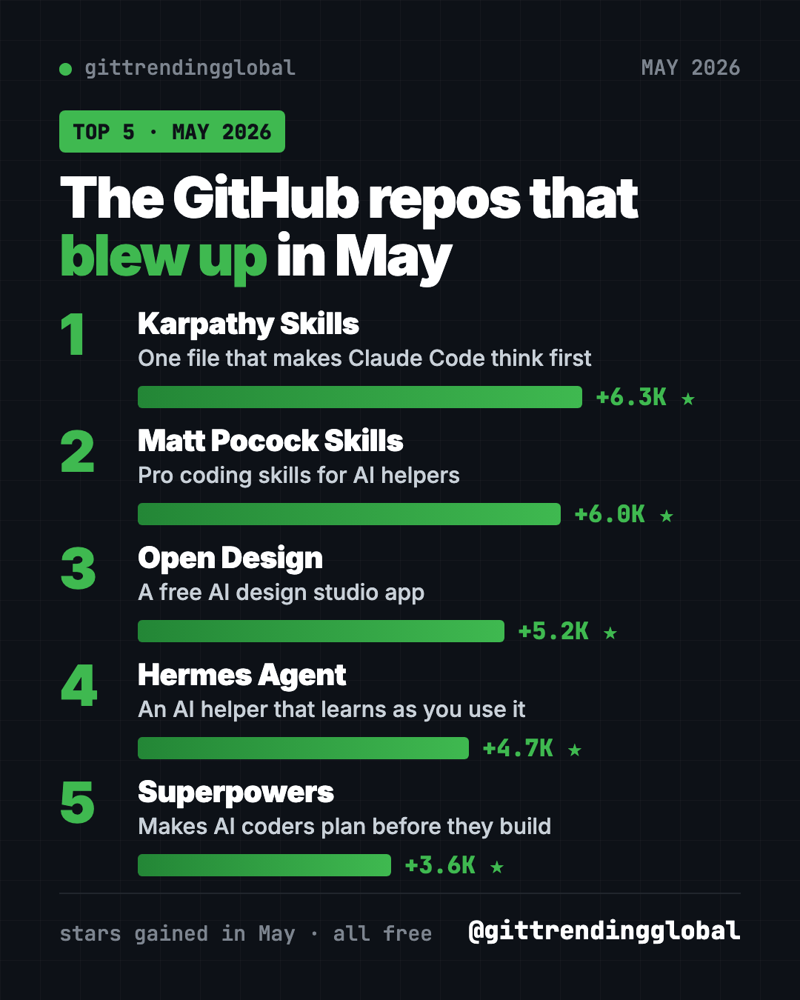
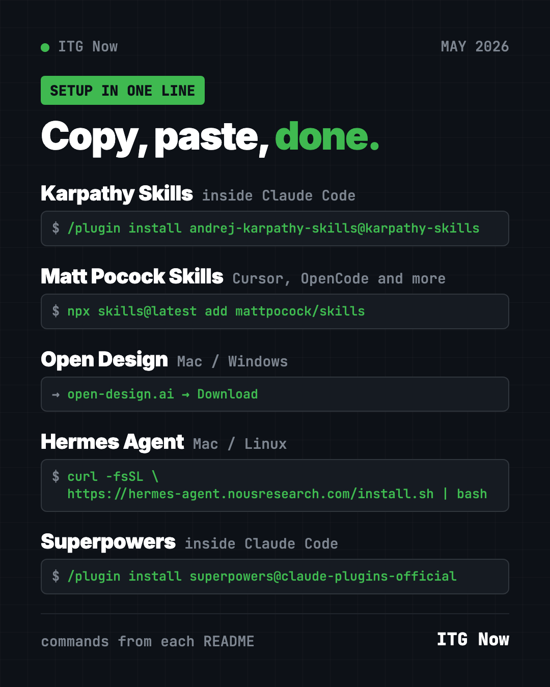
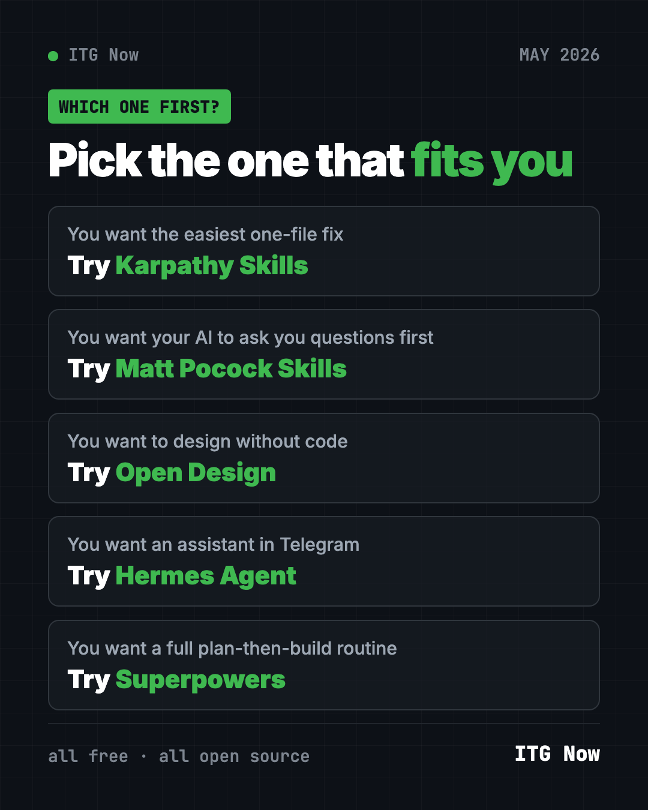

Best GitHub Repos of May 2026 (Free AI Tools)
- Published 15 Oct 2026
- Updated 16 Oct 2026
- 10 min read
- By the ITG Now team
In this guide (9)
- Key takeaways
- The 5 trending GitHub repos of May 2026 at a glance
- 1. Karpathy Skills: the one-file fix
- 2. Matt Pocock's Skills: skills for real engineers
- 3. Open Design: a free AI design studio
- 4. Hermes Agent: the assistant that learns
- 5. Superpowers: plan first, then build
- Which one should you try first?
- FAQ
The best GitHub repos May 2026 had to offer were Karpathy Skills, Matt Pocock's Skills, Open Design, Hermes Agent and Superpowers. Four of the five are about one thing: making AI helpers work more carefully. The fifth, Open Design, is a free design studio you can download.
A GitHub star works like a bookmark. In May the top gains were much smaller than in earlier months, between about 3,600 and 6,300 stars. Even so, these were the five repos that grew most in our monthly data. For each one you get plain uses, the real setup command, and a prompt for an AI helper.
Key takeaways
- Karpathy Skills led May 2026 with about 6,300 new stars. It is one file of rules that makes Claude Code think first.
- Matt Pocock's Skills are small, practical skills from a well-known coding teacher. The famous one, "grill me," makes the AI interview you about your plan.
- Open Design is a free desktop app for making prototypes, slides, dashboards and more with AI.
- Hermes Agent kept growing. It is an AI assistant that learns from what you do.
- Superpowers returned to the list with its plan-first routine for AI coders.

The 5 trending GitHub repos of May 2026 at a glance
| Repo | What it does | Who it's for | Free? | Works with |
|---|---|---|---|---|
| Karpathy Skills | Four rules that stop common AI coding mistakes | Claude Code and Cursor users | Yes (MIT) | Claude Code, Cursor |
| Matt Pocock's Skills | Small skills for planning, testing and handoffs | Anyone coding with AI | Yes (MIT) | Claude Code, Codex, Copilot, Gemini CLI, Cursor |
| Open Design | AI design studio app | Founders, designers, marketers | Yes (Apache-2.0), paid cloud credits optional | Mac, Windows (Linux from source) |
| Hermes Agent | AI assistant that learns and remembers | Anyone who wants a personal helper | Yes (MIT), AI model may cost | Mac, Windows, Linux, chat apps |
| Superpowers | Plan-first routine for AI coders | Anyone using an AI coding helper | Yes (MIT) | Claude Code, Codex and more |
Star gains are May 2026 numbers. Total star counts below were checked on GitHub on October 16, 2026.
💡 Tip: Some steps use the "terminal," a plain text window for commands. On a Mac, open Terminal. On Windows, open PowerShell. Paste, press Enter, wait.
1. Karpathy Skills: the one-file fix
Stars: +6.3K in May · about 220K total
What it is: Karpathy Skills is a single CLAUDE.md file. That is the instruction file Claude Code reads at the start of every session. It turns public comments by AI researcher Andrej Karpathy into four rules. Think before coding. Keep it simple. Touch only what you must. Set a goal you can check. It is not by Karpathy himself, but it is based on his words.
Who it's for: Anyone who wants better AI coding with the least effort.
How you'd use it:
- Make your AI ask when a request is unclear, instead of guessing.
- Stop it from adding features you never asked for.
- Get it to say how it will check the work is done.
Install it: Inside Claude Code, paste these two lines:
/plugin marketplace add forrestchang/andrej-karpathy-skills
/plugin install andrej-karpathy-skills@karpathy-skills
Cursor users get a ready rule file in the repo.
Or let Claude or Codex do it: Claude Code and OpenAI Codex are AI helpers that can run setup for you. Paste this into one:
Add the CLAUDE.md guidelines from
https://github.com/multica-ai/andrej-karpathy-skills to this project.
If a CLAUDE.md already exists, add them to the end instead of replacing it.
See Karpathy Skills on GitHub · Read our full Karpathy Skills guide
2. Matt Pocock's Skills: skills for real engineers
Stars: +6.0K in May · about 293K total
What it is: Matt Pocock is a well-known coding teacher. This repo shares the skills he uses every day with AI coding helpers. They are small and easy to change, and they work with any model. The best known is /grill-me, which makes the AI interview you about a plan until every question is answered. Others turn a chat into a spec, write code test-first, or hand work over to another AI session.
Who it's for: Developers, and also non-coders with a plan. The /grill-me skill works for any plan, not just code.
How you'd use it:
- Run
/grill-meon a business idea and answer the hard questions early. - Use
/handoffto sum up a long chat so a fresh session can pick it up. - Use
/teachto learn a new topic over several sessions.
Install it: For Claude Code, copy and paste this into your terminal:
claude plugin install mattpocock-skills@claude-plugins-official
For Cursor, OpenCode and other tools, use this instead:
npx skills@latest add mattpocock/skills
When it asks which skills to take, include setup-matt-pocock-skills. Then run /setup-matt-pocock-skills once in your project.
⚠️ Heads up: Pick one install method per AI helper. The README warns that using both gives you every skill twice.
Or let Claude or Codex do it:
Install Matt Pocock's skills from https://github.com/mattpocock/skills for
the AI tool I use, using one method only. Run the setup skill, then use
/grill-me to question me about a small project idea.
See Matt Pocock's Skills on GitHub · Read our full Matt Pocock Skills guide

3. Open Design: a free AI design studio
Stars: +5.2K in May · about 101K total
What it is: Open Design calls itself a collaborative AI design workspace. You type a short brief, and your AI coding helper makes a prototype, website, app screen, dashboard, slide deck, image or video. You can share it with your team, gather feedback, and let the AI refine it. The desktop app finds the AI coding tools already on your computer. It comes with 100+ skills and 151 design systems, according to the README.
Who it's for: Founders, marketers and designers who want quick drafts without learning design software.
How you'd use it:
- Make a clickable prototype of an app idea to show a friend.
- Turn this month's numbers into a clean dashboard.
- Draft a pitch deck in a consistent style.
Install it: The easiest way is the desktop app for Mac or Windows. Download it from open-design.ai or the GitHub releases page. There is no ready Linux app yet, so Linux users run it from source. If you already use Claude Code, you can add it there instead:
od mcp install claude
Then, inside Claude Code, try the README's example:
Use open-design to generate a landing page with the Linear design system
Or let Claude or Codex do it:
Help me install Open Design from https://github.com/nexu-io/open-design.
I am on a Mac, so check whether "od" points to Apple's built-in tool first,
as the README warns. Then make a one-page site for my dog-walking business.
⚠️ Heads up: The app is free and open source. It also sells optional cloud credits called OpenDesign Go. You don't need them if you use your own AI helper.
See Open Design on GitHub · Read our full Open Design guide
4. Hermes Agent: the assistant that learns
Stars: +4.7K in May · about 254K total
What it is: Hermes Agent is a free AI assistant from the lab Nous Research. It learns from experience. It turns tasks it has done into reusable skills, improves them, and remembers you across sessions. You can chat with it in the terminal or from Telegram, Discord, Slack, WhatsApp and Signal. It works with many AI models, and you can switch with one command.
Who it's for: Anyone who wants a personal assistant that remembers context.
How you'd use it:
- Send it a link from your phone and ask for a summary later.
- Let it learn your weekly to-do routine and run it for you.
- Move over from OpenClaw, since it can import your old settings.
Install it: On Mac, Linux or WSL2, copy and paste this:
curl -fsSL https://hermes-agent.nousresearch.com/install.sh | bash
On Windows, paste this into PowerShell:
iex (irm https://hermes-agent.nousresearch.com/install.ps1)
Reopen your terminal, then run hermes setup.
Or let Claude or Codex do it:
Install Hermes Agent from https://github.com/NousResearch/hermes-agent with
its official installer. Walk me through "hermes setup" in plain words,
then help me send it a first message.
See Hermes Agent on GitHub · Read our full Hermes Agent guide
5. Superpowers: plan first, then build
Stars: +3.6K in May · about 300K total
What it is: Superpowers is a free skill pack that gives AI coding helpers a careful working method. It asks what you want, shows a short design, writes a plan, and then builds in small, tested steps. The skills start on their own, so you don't need to learn commands.
Who it's for: Anyone who wants a full plan-then-build routine, not just a few rules.
How you'd use it:
- Plan a small app with it, step by step, before anything changes.
- Let it build while you check in now and then.
- Use it with Claude Code, Codex, Cursor, Gemini CLI or OpenCode.
Install it: Inside Claude Code, copy and paste this:
/plugin install superpowers@claude-plugins-official
Or let Claude or Codex do it:
Install Superpowers from https://github.com/obra/superpowers for my AI tool
following its README. Then plan a simple habit tracker with me and show
me the plan before writing any code.
See Superpowers on GitHub · Read our full Superpowers guide
Which one should you try first?
- You want the easiest win: add Karpathy Skills. It is one file.
- You want the AI to ask you questions first: install Matt Pocock's Skills and run
/grill-me. - You want to design without design software: download Open Design.
- You want an assistant in your chat apps: try Hermes Agent.
- You want a full routine for bigger projects: go with Superpowers.

For the month's AI headlines, read May 2026 in AI. Or see how things looked a month earlier in April's best GitHub repos.
FAQ
What were the best GitHub repos of May 2026?
By stars gained, the top five were Karpathy Skills, Matt Pocock's Skills, Open Design, Hermes Agent and Superpowers. Karpathy Skills led with about 6,300 new stars.
Why are May's star gains so much smaller?
Our monthly source showed lower top gains in May than in earlier months. We report the numbers as given and don't guess at the reason.
Are these trending GitHub repos free?
Yes, all five are free and open source. Hermes Agent uses an AI model you pick, which may cost money. Open Design sells optional cloud credits.
What is the difference between Karpathy Skills and Superpowers?
Karpathy Skills is one short file of rules. Superpowers is a full set of skills that runs a plan, build and test routine.
Do I need to know how to code?
No. Open Design has a desktop app, and the rest install with one line. You can also paste our prompts into Claude Code or Codex and let it do the setup.
Keep reading

Trending GitHub Repos October 2026: The Top 5 So Far
The trending GitHub repos of October 2026 so far: a free Photoshop-style editor, an AI art studio, a big AI model for gaming PCs and more, explained.

Trending GitHub Repos This Week, Oct 5 2026: The Top 5
Trending GitHub repos this week Oct 5 2026: Matt Pocock's skills, the openGym workout tracker, e2e testing, HyperFrames video and claude-mem memory.

GitHub Trending September 28, 2026: Hindsight and Paperclip
GitHub trending September 28 2026: Hindsight, Paperclip, NVIDIA's OpenShell and a free 542-lesson AI course, with setup steps for each.